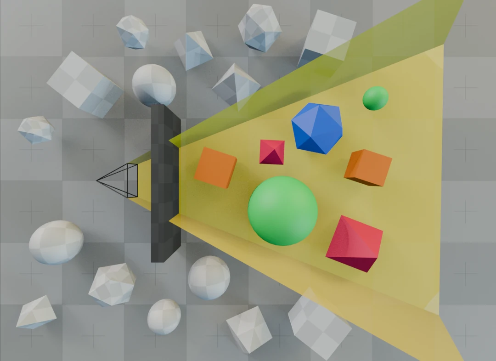
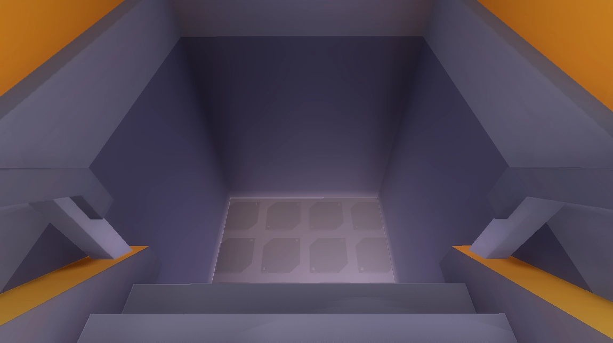
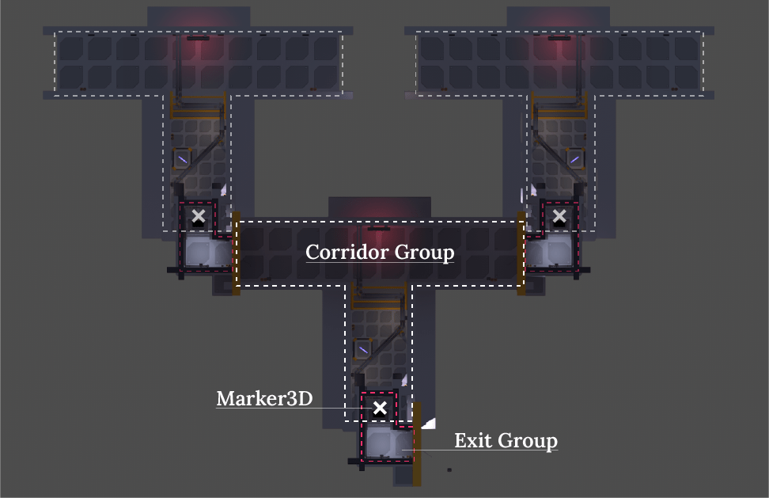
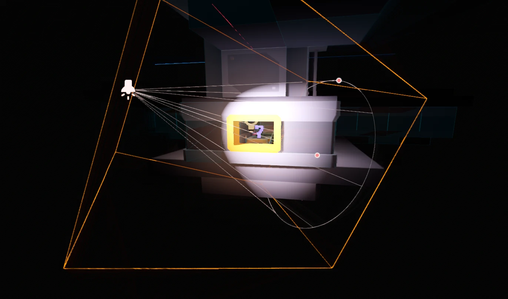
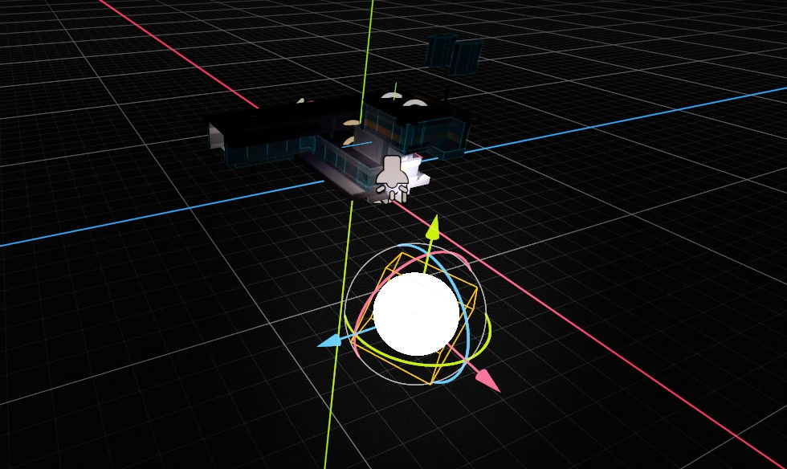

Funzionamento
Meccanismo della soluzione
La freccia rossa indica sempre l'uscita corretta per raggiungere le stanze successiva. Tuttavia la prima porta che il giocatore guarda è sempre bloccata, mentre la seconda è sempre libera. Per vincere occorre sempre guardare per prima nella direzione opposta alla freccia.
Il modo più semplice per realizzarlo è posizionare da subito un ostacolo su entrambe le porte, non appena il giocatore ne guarda uno si rimuove immediatamente quello opposto.
Ma come si crea questo meccanismo?
In Godot Engine esiste un Nodo chiamato
VisibleOnScreenNotifier3D capace di emettere un segnale
quando la sua area entra o esce dal campo visivo della
Camera.
Così facile? No, perché non si tratta di un vero
campo visivo che tiene conto eventuali ostacoli o muri, ma di
una regione tridimensionale proiettata dalla camera,
anche detta Frustum View.
Quindi il Nodo VisibleOnScreenNotifier3D si considera
"visibile" quando entra nel Frustum, anche se è nascosto da un muro e
non può essere visto direttamente dal giocatore.
 Un chiaro esempio di oggetti che sono all'interno del Frustum View, ma rimangono invisibili al giocatore a causa di un ostacolo
Per risolvere questo problema basterà rilevare quando tra il giocatore
ed il Nodo VisibleOnScreenNotifier3D si trova un ostacolo
visivo.
Ma in che modo?
Tentativo con un Raycast3D
La scelta più immediata è quella utilizzare un nodo
RayCast3D che parte dallo stipite della porta e punta
costantemente verso il giocatore.
Se il raycast collide direttamente con il Body del giocatore significa
che non ci sono ostacoli nel mezzo e che possiamo "fidarci"
del segnale emesso dal VisibleOnScreenNotifier3D.
BUG: il Raycast punta "costantemente" verso il
giocatore con la funzione look_at(), e rileva le
collisioni attraverso la funzione get_collider(). Questo
meccanismo sembra funzionare sulla carta, ma nella pratica non è
affidabile: il raycast rischia di non aggiornare la sua direzione in
tempo quando il giocatore si muove molto velocemente. In fase di
testing è stato provato che è possibile intravedere di sfuggita la
porta senza azionare il meccanismo, rompendo di fatto la regola
principale del puzzle.
Tentativo con un Area3D
Siccome le pareti della stanza e le porte sono elementi sempre fissi,
il raycast idealmente diventa "utile" solo oltrepassata la linea tra
porta e l'angolo del muro.
Si può quindi ottenere lo stesso meccanismo con un nodo
Area3D che copre proprio questa regione. Quando il
giocatore entra nella zona significa che non ci sono ostacoli tra lui
e la porta e per tanto possiamo "fidarci" del
VisibleOnScreenNotifier3D.
Il Corridoio Infinito
Quando si "cade" dalle scale si atterra in un corridoio
identico al quello di partenza, simulando una sorta di loop infinito.
Tra i gradini e il pavimento c'è un Nodo Area3D che
rileva quando il giocatore sta cadendo, emette un segnale e il gioco
reimposta la posizione al corridoio iniziale, nello stesso punto
"relativo". Si tratta infatti di due scene identiche duplicate, con un
Marker3D posto di fronte alle scale. Durante la caduta si
prende la posizione del giocatore rispetto questo marker e si calcola
quale sarebbe la posizione partendo invece al marker del corridoio
principale.
 Scale che danno sul corridoio successivo
 Vista dall'alto della mappa di gioco
 Vista prospettica della mappa di gioco
Vista prospettica della mappa di gioco
SOLE
Il sole proietta una forte luce all'interno della nave attraverso la finestra del corridoio principale. Roteando ad una velocità lenta e costante ricrea l'effetto del classico movimento di una nave in orbita.
Il sole è in realtà una combinazione di una Mesh luminosa a forma di
sfera ed un Nodo SpotLight3D, ossia un nodo che proietta un cono di
luce. La rotazione ha come fulcro proprio il centro della finestra.
Durante questa animazione anche il cielo stellato si muove nello
stesso modo e alla stessa velocità, attraverso la rotazione del
parametro sky_rotation del nodo
WorldEnvironment.
 